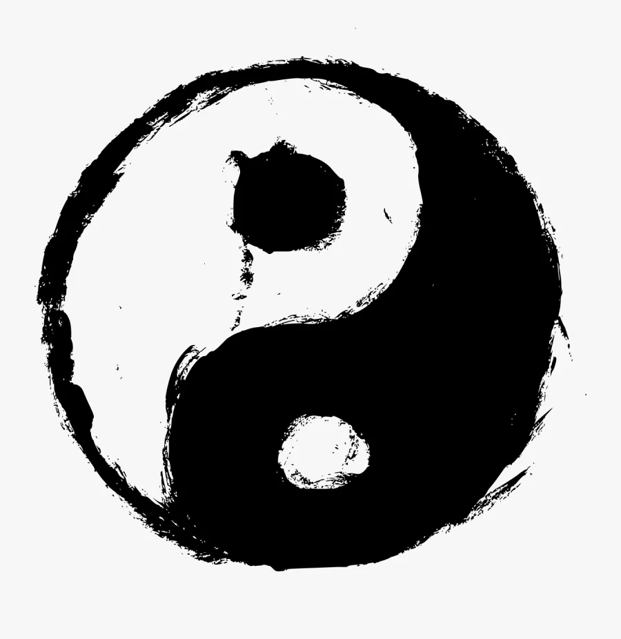

Understanding Chi
This word frequently describes a phenomenon within us in Martial Arts and Healing circles. But what is Chi? We often spell “Chi/Qi/Ki” this way and describe it as Universal Energy, Vital Life Force Energy, or simply Energy. Chi represents the unseen force that flows through all living things. It sustains life and balance in Martial Arts and Healing practices.
Leading scientists, including Albert Einstein, have long accepted and claimed that energy vibrating at different frequencies makes up everything in creation. In all living and sentient beings, energy flows through the body in pathways known as meridians. This energy also contains an inseparable opposing force, known as Yin and Yang.
The Concept of Yin and Yang
The idea of Yin and Yang dates back to 700 BC, first referenced in the famous text “Book of Changes.” Yin and Yang suggest that everything in our universe consists of complementary, equal opposite forces, as illustrated by the Yin/Yang symbol. Each side has at its core an element of the other, and neither pole is superior. Subsequently, an increase of one side brings a corresponding decrease to keep balance and harmony between the two forces.
The concept of Yin and Yang is at the heart of understanding the very nature of Chi, which flows through everything in a negative and positive manner. So, we can describe Chi as an electromagnetic phenomenon, a form of light energy, bio-electromagnetic energy, or electricity.
Five Element Theory
To further understand Chi, we use the theory of Five Elements to describe the interactions and relationships between wood, fire, earth, metal, and water. People believe these elements are fundamental to everything in the universe.
This theory has existed since 700 BC and is widely used in Traditional Chinese Medicine, drawing on thousands of years of observation and change. It asserts that the world changes according to the five elements generating or overcoming relationships with each other. This promotes and restrains the elements to maintain harmony and balance. For example, wood fuels fire, and fire forms earth through ash. Earth contains metal, which controls water, and water feeds wood through trees and plants.
The Five Element diagram highlights the support functions and controlling relationships between each element. The arrows illustrate the flow of energy and how they influence one another.
The Five Elements provide an elaborate framework for all-natural phenomena. Through this framework, we can start to understand the natural law and universal order underlying all things. It provides a map of how nature interacts with the body and how the different dimensions of our being impact each other.
Each element has a Yin and Yang energy that equates to an organ. For example, the metal element contains the lungs and large intestines, where the lung is the Yin organ and the large intestine is the Yang organ. The flow of Chi for these organs also manifests in the corresponding Yin and Yang aspect of the body. Similarly, this pattern emulates throughout the body for all the organs within each element and its corresponding meridian, forming a pathway of Yin and Yang energy circulating through the body.

Fundamental Substances
We can also understand another facet of Chi through a collective of three interrelated Yin/Yang systems. When these different Yin/Yang systems balance, the body remains healthy; conversely, an excess or deficiency can weaken or make the body ill.
These three systems are:
- Fundamental Substances: (Energy), Xue (Blood), Jinye (Body Fluids), Jing (Essence), and Shen (Spirit).
- Zang Fu or Yin Yang Organs: Discussed above in Five Element Theory.
- Jing-luo or Meridians: Pathways connected to the Zang-Fu organs through which the five substances flow.
These systems are responsible for performing five key functions illustrated below, which protect and maintain the health of our body:
- Actuation: Functions of the body such as circulating body fluids and blood.
- Warming: Keeping the body warm so it can perform as it should, such as the limbs.
- Defense: Protecting against external pathogens such as viruses.
- Containment: Ensuring that bodily fluids remain within the body.
- Transformation: Breaking down substances such as foods and drinks into energy and eventually blood.
Cultivating Chi
Chi plays a vital role in our lives from all aspects (body, mind, and spirit). To understand Chi, one must first learn to understand the nature of how our bodies find balance. Yin/Yang, Five Elements, and Vital Substances are key theories that provide a valuable outlook on the way Chi behaves.
This perspective on Chi helps illustrate its connection to the physical practice of Martial Arts. If your body isn’t in a balanced state, it likely compromises your Chi. Through the study of Martial Arts, one can begin to learn how to cultivate, balance, and use this mysterious force within!es a Form (Kata) or Chi Kung posture (Meditation), they cultivate Chi, provided they practice the form and postures correctly.. Ultimately, application of the Form and deep knowledge of Internal Martial Arts allows one to understand the effectiveness and use of Chi in the context of self defence scenarios.